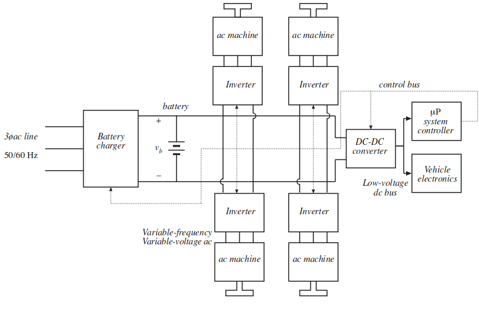

class: center, middle # EE-463 STATIC POWER CONVERSION-I ## (aka Power Electronics-I) ## Ozan Keysan ## [keysan.me](http://keysan.me) ### Office: C-113 <span class="meta">•</span> Tel: 210 7586 --- # Introduction to Power Processing -- ## Fundamental Block Diagram <img src="./images/ee463/power_processing.png" alt="Drawing" style="width: 600px;"/> --- # Different Source Voltage Characteristics -- ## - DC (At various voltages) -- ## - Single Phase AC (Commonly 110-240V 50/60 Hz) -- ## - Three Phase AC ## ... --- # Different Requirements at the Output -- ## - DC (Regulated, constant magnitude) -- ## - Adjustable DC -- ## - AC (Constant frequency, variable magnitude) -- ## - AC (Variable frequency and magnitude) --- # Control is almost always needed -- ## - Output Voltage Regulation -- ## - Overload Protection -- ## - Power Quality -- ## - Frequency Fixing (i.e. grid connected inverters) ## ... --- # Control is almost always needed -- <img src="./images/ee463/power_processing_control.png" alt="Drawing" style="width: 600px;"/> --- # Classification wrt Switching Characteristics -- ## - Line frequency (naturally commutated) converters -- ## (e.g. diode rectifiers) -- ## - Switching (forced-commutated) converters -- ## (e.g. switched mode power supplies) -- ## -Resonant converters (zero voltage or zero current switching) --- # Basic Building Blocks -- ## - AC/DC Converters (aka Rectifiers) -- ## - DC/AC Converters (aka Inverters) -- ## - DC/DC Converters (e.g. SMPS) -- ## - AC/AC Converter (e.g. Cycloconverter) --- # What are the desired factors? ## - High [Efficiency](https://www.rohm.com/image/image_gallery?uuid=2a92392c-e9db-441e-b646-6b2563248ca7&groupId=11308&t=1435281819648) -- ## - High Power Density (i.e. small size) Example: [Little Box Challenge](http://littleboxchallengecetpower.com/), [Toyota Hybrid Car Inverters](https://www.youtube.com/watch?v=9FGSOK5l6s0) -- ## - [Reliable](https://www.acopian.com/keep-machines-up.html), high quality output (and input) power -- ## - Minimum Cost [Origival vs. Cheap Macbook Charger](http://www.righto.com/2015/11/macbook-charger-teardown-surprising.html) --- # Applications of Power Electronics -- ## - <1W in portable equipments ([Tiny Power](https://www.ipu.dk/cases/micro-fabrication-with-mems-technology-and-electroplating-for-future-intelligent-electronics/)) -- ## - ~100Ws for power supplies, house hold applications ([Power Supply](http://www.xppower.com/)) -- ## - Several kWs for industrial motor drives ([ABB Drives](https://search-ext.abb.com/library/Download.aspx?DocumentID=3AFE68401771&LanguageCode=en&DocumentPartId=1&Action=Launch)) -- ## - >1 MW for grid applications (HVDC transmission, renewable energy) ([ABB 3000 MW, 1100kV HVDC](https://www.windpowerengineering.com/abb-writes-another-chapter-high-voltage-direct-current-textbook/)) --- ## You need to consider many aspects --- <img src="https://image.slidesharecdn.com/l1-introduction-150627103854-lva1-app6891/95/l1-introduction-4-638.jpg?cb=1447700690" alt="Drawing" style="width: 850px;"/> --- # Examples --- # Phone Charger <img src="https://smsoptimizedimages.azureedge.net/0017262_samsung-ta20-c-type-hizli-seyahat-sarj-aleti-beyaz-ep-ta20ewecgww_550.jpeg" alt="Drawing" style="width: 400px;"/> ### Can you plot the main block diagrams? --- # Power Electronics in a Laptop ### Can you plot the main block diagrams? <img src="http://www.targus.com/content/images/thumbs/0000685_laptop-charger-with-usb-fast-charging-port.jpeg" alt="Drawing" style="width: 500px;"/> --- # Laptop Charger (and other PE components) <img src="./images/ee463/laptop_charger.png" alt="Drawing" style="width: 750px;"/> --- #Power Electronics in an Electric Car <img src="https://inhabitat.com/wp-content/blogs.dir/1/files/2016/10/Tesla-Model-S.jpg" alt="Drawing" style="width: 700px;"/> --- #Power Electronics in an Electric Car  --- #Grid Connected PV System <img src="http://www.sunwindenergy.com/sites/default/files/field/image/pv_1_mw_india.jpg" alt="Drawing" style="width: 700px;"/> --- #Grid Connected PV System <img src="https://www.researchgate.net/profile/Abd_Mansour/publication/279189144/figure/fig1/AS:397530228641794@1471790000377/Block-diagram-of-the-PV-system-connected-to-the-grid.png" alt="Drawing" style="width: 800px;"/> --- #Wind Turbine <img src="https://www.nrel.gov/news/features/images/20110429_wind_pix18890_large.jpg" alt="Drawing" style="width: 800px;"/> --- #Wind Turbine ## Back-to-back Converter <img src="https://www.researchgate.net/profile/Zhe_Chen23/publication/224115715/figure/fig1/AS:302780859338754@1449199990091/Block-diagram-of-a-grid-connected-wind-turbine-with-a-PMSG-and-a-full-scale-converter.png" alt="Drawing" style="width: 800px;"/> --- ## Back-to-back Converter <img src="https://www.researchgate.net/profile/Junbum_Kwon/publication/292150734/figure/fig1/AS:613877314232320@1523371165349/Block-diagram-for-Full-scale-back-to-back-BtB-converter-a-Structure-of-wind-turbine.png" alt="Drawing" style="width: 600px;"/> --- #Wind Turbine ## Some other options (for smaller turbines) <img src="https://www.researchgate.net/profile/Marcelo_Molina/publication/221911675/figure/fig4/AS:304715268149250@1449661189641/Type-A-wind-turbine-concept-Fixed-speed-wind-turbine-directly-connected-to-the-electric.png" alt="Drawing" style="width: 800px;"/> --- ## You can download this presentation from: [keysan.me/ee463](http://keysan.me/ee463)